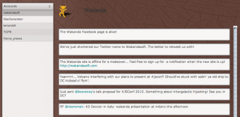

Twitter Client for desktop and mobile
level
medium
Description
This is a demo template explaining how to dispatch an http request
depending on different variables, using the dispatch service. In this example, we want to root the
request for mobile divices, so the variables will be the device and the
presence of a file designed for mobile.
Introduced technologies
- Http rooting and addHttpRequestHandler
- Creation of different interfaces for mobile and desktop.
Use the application
- click on the "run project"button (
 )
)
- use your application

How to
In order to add a file designed for mobile device (for smartphone or tablet) right selected Add > New Page for Smartphone / tablets.
Fisrt of all, add the "platform" service to the waSettings file :
<service name="platform" pattern="" autostart="true"/>
Note. We assume that into every mobile folders (smarthone, tablet) all the roots files are named index.html.